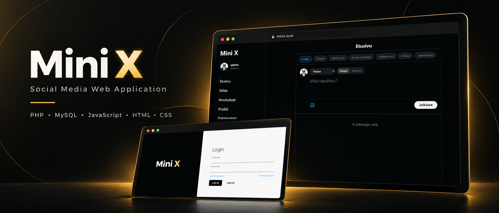
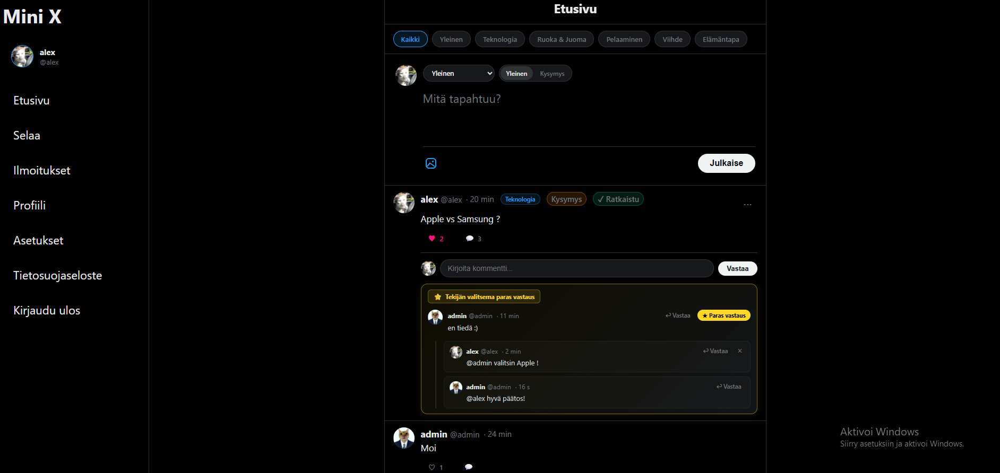
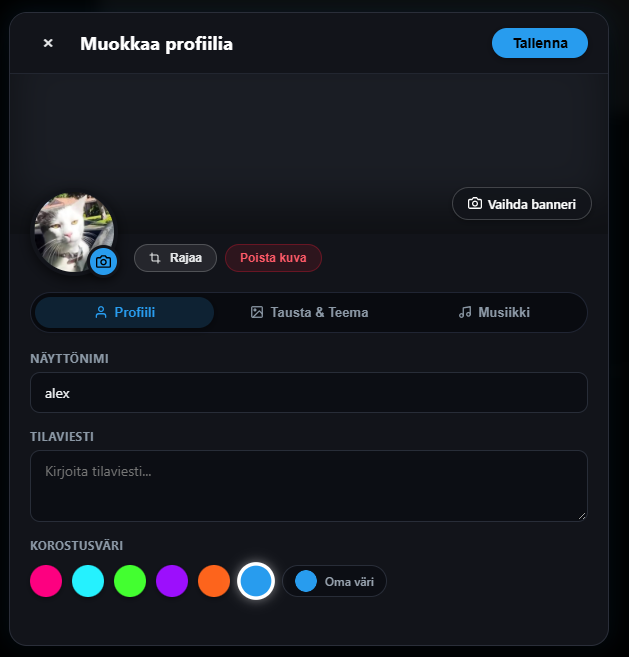
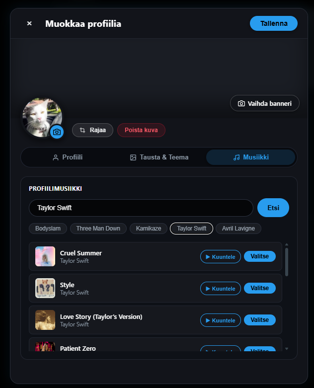
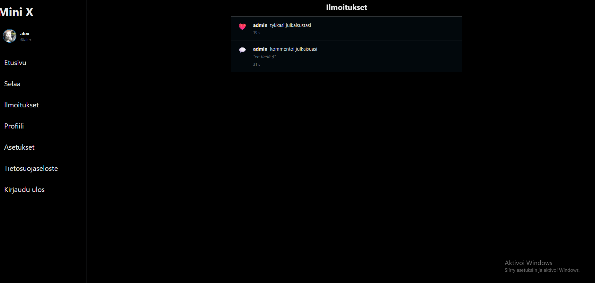
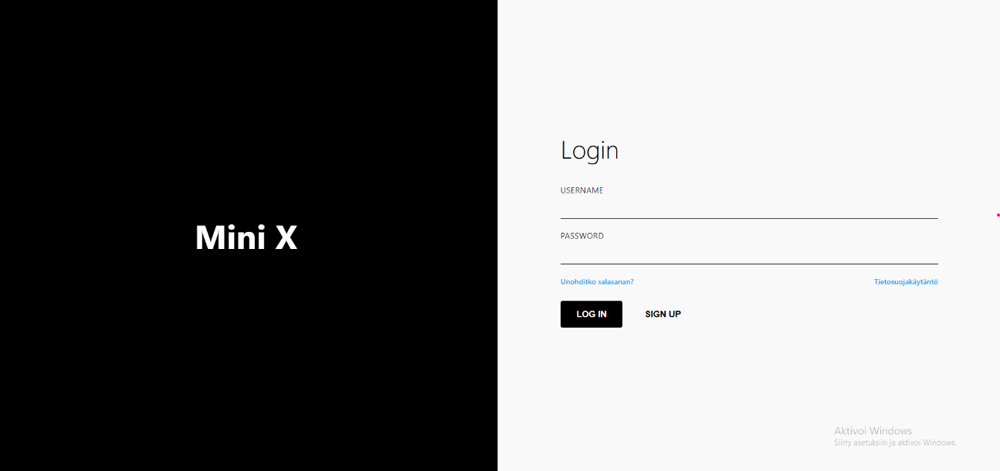

Mini X
Yhteisöllinen mikroblogi- ja Q&A-alusta
Mini X on selaimessa toimiva sosiaalisen median sovellus, jossa yhdistyvät reaaliaikainen mikroblogisyöte, aihekohtaiset keskusteluhuoneet, ratkaisukeskeinen Q&A-järjestelmä sekä poikkeuksellisen monipuolinen profiilin kustomointi ja musiikki-integraatio.

Syöte, aihehuoneet ja Q&A-järjestelmä
Mini X yhdistää sosiaalisen mikrobloggauksen ja foorumeilta tutun rakenteellisen ongelmanratkaisun. Julkaisut jäsennellään 6 aihehuoneeseen, ja kysymyspostauksissa tekijä voi nostaa esiin parhaan vastauksen.
-
6 aihehuonetta (Rooms): Yleinen, Teknologia, Ruoka & Juoma, Pelaaminen, Viihde ja Elämäntapa. Syöte suodattuu välittömästi ilman sivulatausta.
-
2 julkaisutyyppiä: Normaali tilapäivitys tai kysymys (
post_type = 'question'), joka tukee ongelmanratkaisua yhteisön avulla. -
Paras vastaus & Ratkaistu-tila: Kysymyksen esittäjä valitsee parhaan vastauksen, joka kiinnitetään ketjun kärkeen kultaisella kehyksellä ja julkaisu saa vihreän
[✓ Ratkaistu]-merkin. -
Ketjutetut kommenttivastaukset: Yhden tason sisennetyt vastaukset suoralla käyttäjämaininnalla (
@käyttäjä).

Profiilin kustomointi, teemat ja rajaustyökalu
Käyttäjä voi rakentaa oman näköisensä tilan. Käyttöliittymä yhdistää modernin tumman teeman retrohenkisiin profiiliteemoihin (Hi5/MySpace-inspiraatio) yhtenäisestä modaalieditorista.
-
Avatar Cropper: Interaktiivinen pyöreä rajaustyökalu canvas-pohjaisella esikatselulla ja zoom-liukusäätimellä.
-
Bannerin pystykohdistus: Kansikuvan kohdistus liukusäätimellä (0–100%
banner_pos_y), joka takaa optimin rajauksen eri laitteilla. -
Korostusvärit (Accent Colors): 6 valmista teemaväriä (Hot Pink, Cyber Cyan, Toxic Lime, Electric Violet, Sunset Neon, Mini-X Blue) sekä HTML5-värivalitsin.
-
Valmiit taustateemat & Oma kuva: Esiasetetut teemat (Cyber Grid, Tähtitaivas, Retro Polka, Neon Sunset, Cosmic Nebula) tai oma taustakuva (max 8 MB) MIME-validoinnilla.

Apple Music / iTunes API ja audiosoitin
Mini X integroituu Apple Music / iTunes Public Catalog -rajapintaan. Käyttäjä voi etsiä miljoonien kappaleiden joukosta suosikkinsa ja asettaa sen soimaan suoraan profiilisivullaan.
-
Reaaliaikainen musiikkihaku: Hakee kappaleen nimen, artistin, albumin ja korkearesoluutioisen kansikuvan (200x200) suoraan virallisesta rajapinnasta cURL-kutsulla.
-
30–90 sekunnin viralliset esikuuntelut: Korkealaatuinen äänivirta ilman mainoksia suoraan selaimessa toimivalla HTML5 Audio -elementillä.
-
Instagram Story -tyylinen audiosoitin: Squircle-kansikuva, animoitu ääniaaltotaajuuskorjain (Equalizer wave), kappaleen tiedot, toisto/tauko-säädin sekä mikrotason edistymispalkki.
-
Pikahakuchipsit: Suositut artistihaut yhdellä napautuksella (esim. Taylor Swift, Bodyslam, Three Man Down).

Dynaaminen ilmoituskeskus ja taustapollaus
Sovelluksessa on kevyt ja tehokas ilmoitusarkkitehtuuri. Käyttäjä saa tiedon tykkäyksistä, kommenteista, vastauksista ja parhaan vastauksen valinnoista välittömästi ilman sivun manuaalista päivittämistä.
-
2 sekunnin taustakysely (Polling): Asynkroninen JavaScript Fetch API kyselee kevyiltä päätepisteiltä (
api/notifications-count.phpjaapi/get-new-notifications.php) uudet tapahtumat. -
Dynaaminen laskurimerkki: Sivupalkin ilmoituskuvakkeen viereen ilmestyy automaattisesti punainen lukemattomien ilmoitusten määräbadge.
-
Inkrementaalinen päivitys (Prepend): Ilmoitussivulla uudet tapahtumat ilmestyvät saumattomasti listan kärkeen ilman sivuvälähdystä.
-
Suora ankkurilinkitys: Kommenteista näytetään sitaatti ja ilmoituksen klikkaus vie suoraan oikeaan julkaisuun ja kommenttikenttään (
#comments-ID).

Tuotantotason sovellusturvallisuus & GDPR
Mini X on rakennettu alusta alkaen noudattamaan tiukkoja tietoturvakäytäntöjä, parametroituja tietokantakyselyitä sekä EU:n GDPR-tietosuoja-asetusta.
Kaikki tietokantakyselyt suoritetaan parametroitujen lauseiden kautta (mysqli::prepare ja bind_param), mikä eliminoi SQL-injektiohyökkäykset.
Salasanat tiivistetään käyttämällä PHP:n modernia password_hash() -funktiota BCRYPT-algoritmilla ja vahvistetaan password_verify():llä.
Kryptografiset random_bytes(16) -tunnisteet tiivistetään SHA-256-muotoon tietokantaan. Linkit vanhenevat automaattisesti 30 minuutissa.
Ladatut kuvat validoidaan suoraan tiedoston binäärisisällön perusteella sallittuihin MIME-tyyppeihin (JPG, PNG, WEBP, GIF) ja tallennetaan satunnaisella hash-nimellä.
Tilin poisto vaatii salasanavahvistuksen. Tili asetetaan 30 päivän tauolle ennen lopullista tuhoamista, ja käyttäjä voi palauttaa tilinsä kirjautumalla sisään.

Käytetyt teknologiat ja kirjastot
Rakennettu tarkoituksella puhtaille web-standardeille ilman raskaita valmiskehyksiä, varmistaen erinomaisen suorituskyvyn ja syvällisen arkkitehtuurin hallinnan.
Palvelinpuolen logiikka, reititys, istuntokohtainen tunnistautuminen, tiedostojen MIME-käsittely ja API-päätepisteet.
Relaatiotietokanta (InnoDB & utf8mb4_unicode_ci), normalisoidut taulut julkaisuille, kommenteille, ilmoituksille ja kustomoinnille.
Moderni ES6+ ilman riippuvuuksia: Fetch API asynkroniseen taustapollingiin, modaalit, audiosoitin ja DOM-käsittely.
Semanttinen merkkaus, moderni CSS Grid & Flexbox, CSS-muuttujat dynaamiseen teemaväritykseen sekä mobiiliresponsiivisuus.
Ulkoinen REST-rajapinta kappaleiden, albumikansien ja 30 sekunnin virallisten ääninäytteiden reaaliaikaiseen hakuun cURL-kutsulla.
Luotettava sähköpostien lähetys salasanan palautustunnisteille SMTP- ja Resend API -valmiudella.
Käyttäjäystävällinen asiakaspään reaaliaikainen lomakevalidointi kirjautumiselle ja rekisteröitymiselle.
Paikallinen Apache-, PHP- ja MySQL-palvelinympäristö, jossa kehitystyö, testaus ja suorituskykyoptimoitu ajo on suoritettu.
Mini X on osoitus kyvystä suunnitella ja toteuttaa monimutkainen ja turvallinen verkkosovellus ilman valmiskehyksiä. Käyttöliittymä yhdistää modernin esteettisyyden, rikkaan vuorovaikutuksen ja järjestelmällisen tietokantarakenteen.
Mini X
Avaa ja kokeile sovellusta verkossa tai tutki sen arkkitehtuuria suoraan GitHubissa.